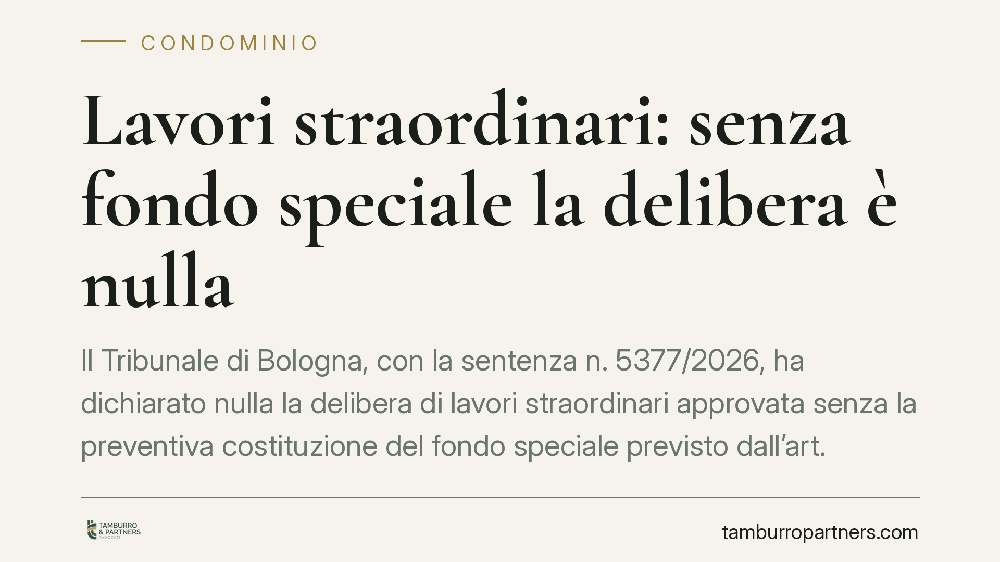

Lavori straordinari: senza fondo speciale la delibera è nulla
Il Tribunale di Bologna, con la sentenza n. 5377/2026, ha dichiarato nulla la delibera di lavori straordinari approvata senza la preventiva costituzione del fondo speciale previsto dall'art. 1135 del Codice civile. La pronuncia colpisce anche i contratti di appalto stipulati a valle e apre alla responsabilità dell'amministratore. Un principio che impone rigore procedurale prima di ogni intervento rilevante.

Il caso
Un condomino impugna la delibera con cui l'assemblea aveva approvato lavori straordinari sull'edificio. Il vizio contestato non riguarda il merito dell'intervento, ma la procedura: l'assemblea aveva dato il via ai lavori senza costituire il cosiddetto fondo speciale, cioè l'accantonamento di denaro pari all'importo complessivo dell'opera.
Il Tribunale di Bologna (sentenza n. 5377/2026) accoglie l'impugnazione e dichiara la delibera nulla — non semplicemente annullabile — per violazione di una norma imperativa. La distinzione, come vedremo, non è formale.
Inquadramento normativo
L'art. 1135, comma 1, n. 4, del Codice civile stabilisce che, quando l'assemblea approva lavori di manutenzione straordinaria o innovazioni, deve contestualmente costituire un fondo speciale di importo pari all'ammontare dei lavori. Se il contratto prevede pagamenti graduali in base allo stato di avanzamento, il fondo può essere costituito in relazione ai singoli pagamenti dovuti.
La ratio della norma è chiara: garantire che il condominio disponga effettivamente delle risorse prima di impegnarsi con un'impresa, evitando che l'esecuzione dei lavori si arresti a metà per mancanza di fondi, con danni per tutti — condòmini e appaltatore.
Il punto qualificante della sentenza è la natura del vizio. Il Tribunale non tratta l'omissione come una semplice irregolarità (che porterebbe all'annullabilità, impugnabile entro trenta giorni), ma come violazione di una norma imperativa, con conseguente nullità. La nullità può essere fatta valere da chiunque vi abbia interesse e non è soggetta ai termini di decadenza previsti per l'annullamento.
Implicazioni pratiche
Le conseguenze della qualificazione in termini di nullità sono rilevanti e si propagano oltre la delibera.
Sui contratti a valle. Il Tribunale ritiene inefficaci i contratti di appalto stipulati sulla base di una delibera nulla. In assenza di una valida deliberazione di spesa, l'amministratore non ha il potere di impegnare il condominio: l'impresa appaltatrice rischia quindi di trovarsi senza un titolo contrattuale opponibile al condominio.
Sulla responsabilità dell'amministratore. Chi dà esecuzione a una delibera priva del fondo speciale, o addirittura stipula contratti prima della sua costituzione, espone sé stesso a responsabilità. L'amministratore che sottoscrive un appalto senza la copertura richiesta dalla legge può essere chiamato a rispondere dei danni verso il condominio e, in prospettiva, verso l'impresa rimasta senza pagamento certo.
Sull'appaltatore. Chi lavora con i condomìni ha interesse a verificare, prima di firmare, che la delibera contenga la costituzione del fondo. Un contratto fondato su una delibera nulla è un contratto fragile.
Cosa fare in concreto
- Verificare la delibera prima dell'esecuzione. Prima di avviare qualsiasi lavoro straordinario, controllare che il verbale assembleare riporti espressamente la costituzione del fondo speciale per l'intero importo o, in caso di pagamenti a stato avanzamento, per le quote via via dovute.
- Coordinare fondo e contratto. Consigliamo di far coincidere le modalità di alimentazione del fondo con il piano dei pagamenti previsto dal contratto di appalto, così da mantenere sempre la copertura richiesta dalla norma.
- Non stipulare in anticipo. L'amministratore non dovrebbe firmare l'appalto prima che il fondo sia stato deliberato. La sequenza corretta è: delibera con fondo, poi contratto.
- Documentare le disponibilità. Tenere traccia degli accantonamenti e delle riscossioni consente di dimostrare, in caso di contestazione, che il fondo era effettivamente costituito e non solo formalmente enunciato.
- Valutare l'impugnazione con attenzione ai termini. Se il vizio configura nullità, l'azione non è soggetta al termine di trenta giorni previsto per l'annullamento; resta comunque opportuno agire tempestivamente per limitare gli effetti dei contratti già avviati.
Una precisazione
La pronuncia è resa da un giudice di merito e riguarda un caso specifico. Il tema della qualificazione del vizio — nullità o annullabilità — è oggetto di dibattito e potrà conoscere sviluppi. Ciò non toglie che il messaggio operativo sia solido: il fondo speciale non è un adempimento facoltativo, ma un passaggio che condiziona la validità stessa della decisione di spesa.
---
*Contributo informativo a cura di Tamburro & Partners - Avv. Giuseppe Tamburro. Non costituisce parere legale.*
Ogni condominio ha una storia a sé.
Se gestisci un'amministrazione e vuoi un confronto su una specifica questione condominiale, scrivi allo studio. Ti rispondiamo entro un giorno lavorativo.